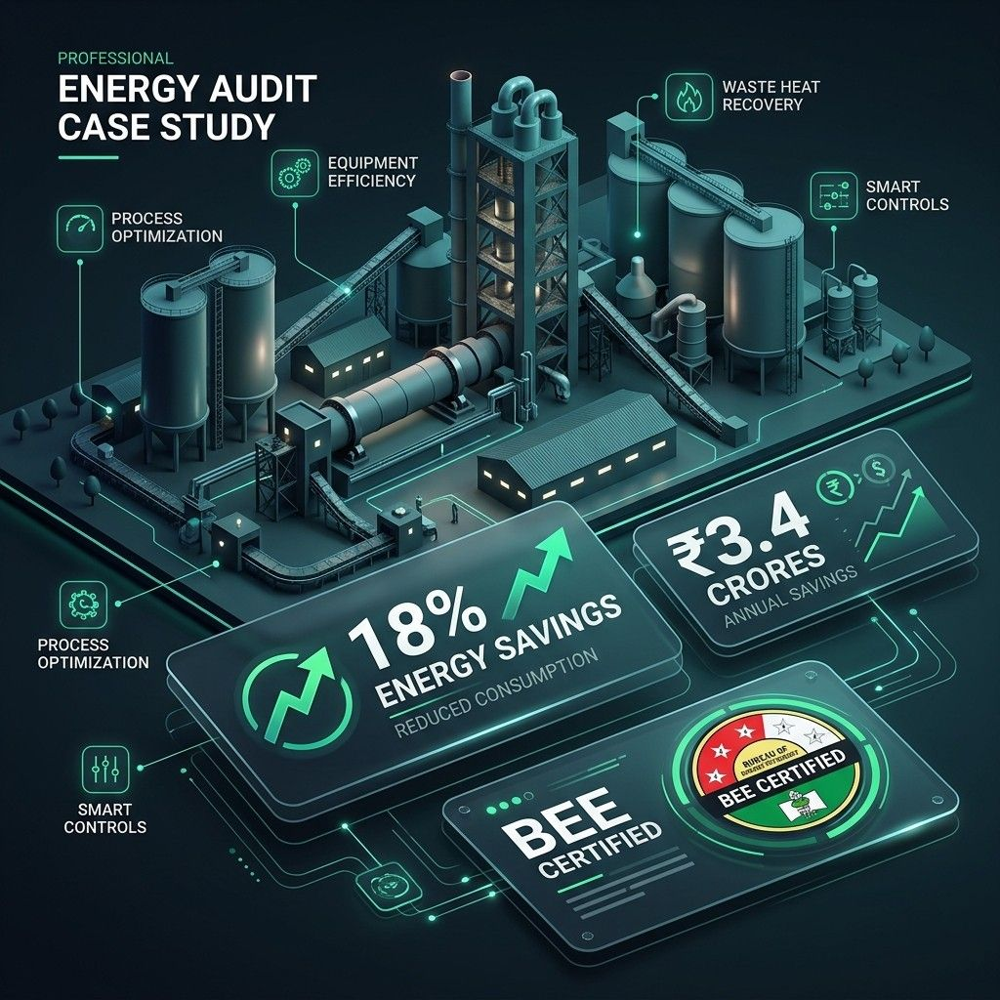

A flagship 2.5 Million Tonnes Per Annum (MTPA) integrated cement factory located in Northern India was grappling with soaring fossil fuel costs and heavy electrical penalties due to high maximum demand (MD). The Specific Energy Consumption (SEC) of their raw mill grinding and clinkerization process was drifting 14% higher than national BEE sector benchmarks. The management engaged B2B Industrial Solutions to execute a Level-3 Investment Grade Energy Audit specifically aimed at optimizing thermal dynamics and blower efficiencies.

The Challenge: High Specific Energy Consumption
Cement manufacturing is notoriously energy-intensive, primarily involving the operation of massive rotary kilns firing at ~1450°C, and gigantic induced draft (ID) fans handling immense volumes of raw gas and dust. The audit parameters were set:
- Thermal Load: Analyze the fuel firing logic, primary/secondary air ratios, and radiation losses across the clinker cooler.
- Electrical Load: Analyze the main 11kV/3.3kV drives running the ball mills, raw mills, and kiln ID fans for massive load imbalances.
- Target: Reduce overall power footprint without sacrificing the 6500 TPD (tonnes per day) production quota.
Deploying The Engineering Solution
The B2B Industrial team mobilized instantly, deploying high-temperature thermocouple probes, ultrasonic flow meters on water loops, and heavy-duty 3-phase power analyzers on the sub-station’s primary incomers.
Key Findings Generated:
- The primary Raw Mill ID fan (running on a 1.2 MW slip ring motor) was operated continuously using mechanical inlet louvre dampers throttled to 60%. This created humongous aerodynamic resistance, wasting nearly 35% of the electrical input instantly.
- Thermography mapping across the external kiln shell identified three major 'hot spots' (reading 350°C on the surface), indicating severe degradation in the internal refractory brick lining.
- Massive leakage in the pneumatic compressed air loops supplying the bagging plant—calculating to an equivalent 90 kW continuous power leak.
Rectification & Identified Results
Based on our categorical Energy Conservation Opportunities, the plant undertook immediate retrofits during their next scheduled shutdown:
Electrical Savings (VFD Integration)
Replaced the mechanical damper throttling system with a massive Medium Voltage Variable Frequency Drive (MV-VFD). The motor power draw plunged by 280 kW instantaneously, saving approximately ₹1.8 Crores annually. ROI achieved in 9 months.
Thermal Optimization
Re-bricked the degraded kiln zones and optimized the coal-firing burner logic to improve the primary air stoichiometry. Specific heat consumption fell by 3.5%, massive considering annual pet-coke tonnages.
Total Annual Operational Savings: Approximately ₹3.4 Crores across targeted thermal and electrical implementations, definitively proving that high-level industrial energy audits are robust financial instruments, not mere overheads.
Explore Similar Industrial Breakthroughs
Textile Manufacturing
See how we eliminated power quality issues and VFD nuisance tripping in a 1-lakh spindle spinning mill.
View Textile Case Study →Comprehensive Energy Audits
Learn more about our standardized methodology for investment-grade energy audits nationwide.
Explore Our Service →